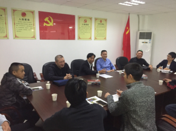

Evaluation Only. Created with Aspose.Words. Copyright 2003-2017 Aspose Pty Ltd.
江门市工商局一行赴利生车城研究部署“放心消费创建活动”
2017年12月1日下午，江门市工商局党组书记、局长容新荣、支队长胡振雄带领消保科、市消委会及江海区市场监管局领导等一行8人到江海区利生车城研究部署“放心消费创建活动”，同时指导利生车城关于非公党建工作的开展。
图为容新荣局长、胡振雄支队长、江海分局陈焕溪局长研究部署“放心消费创建活动”

图为 江门市工商局领导指导车城非公党建工作的开展
